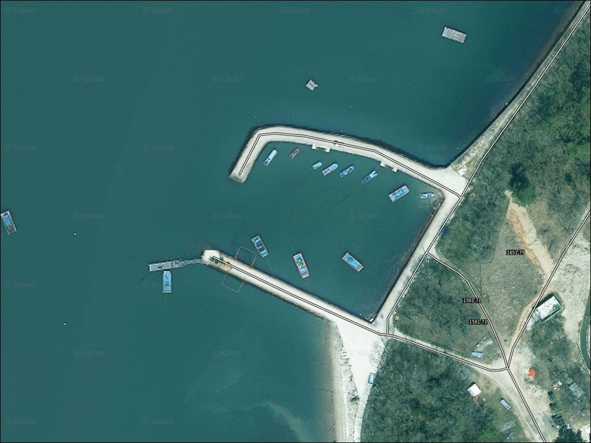
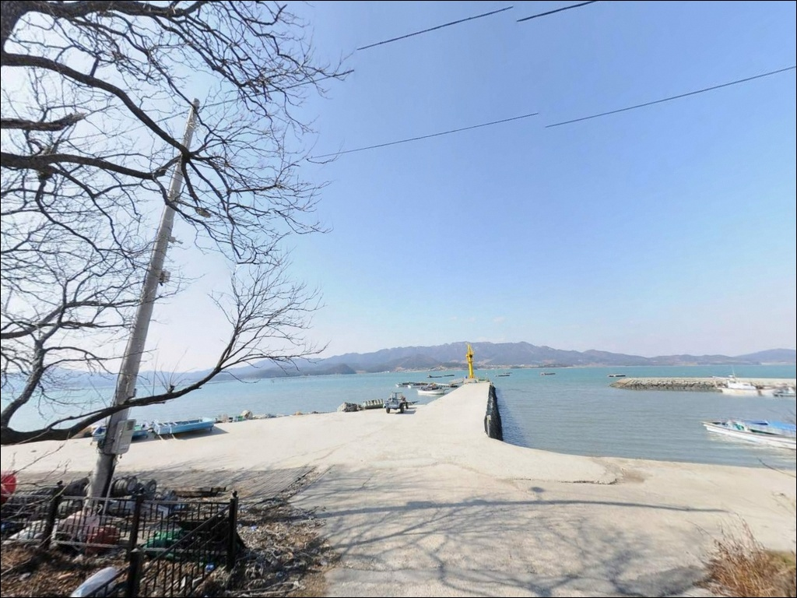
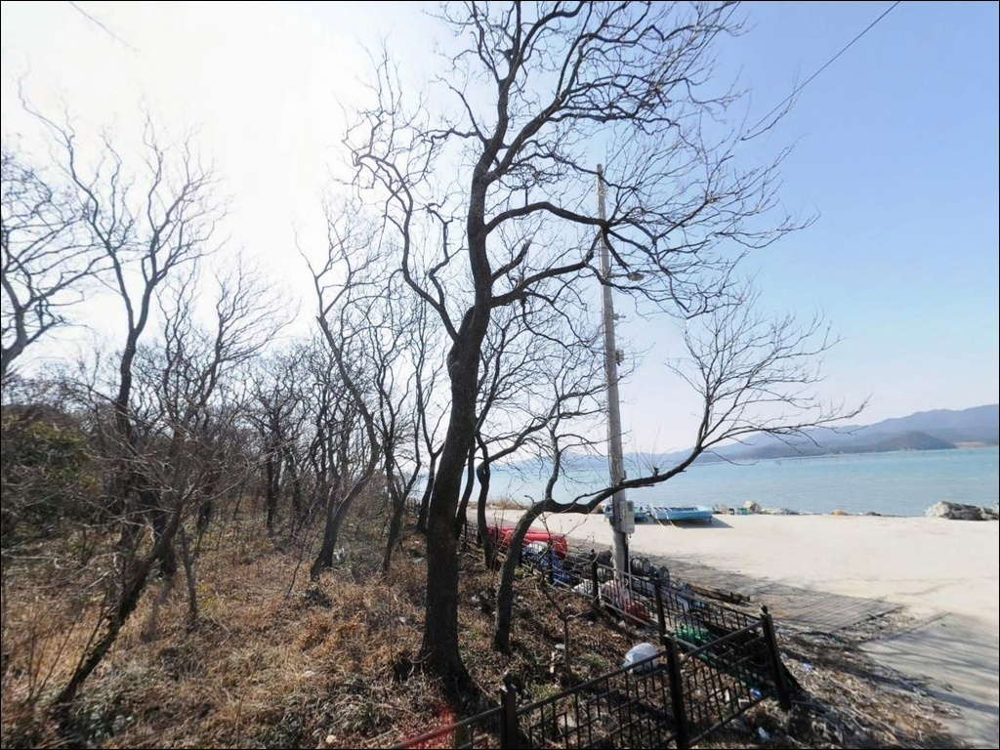
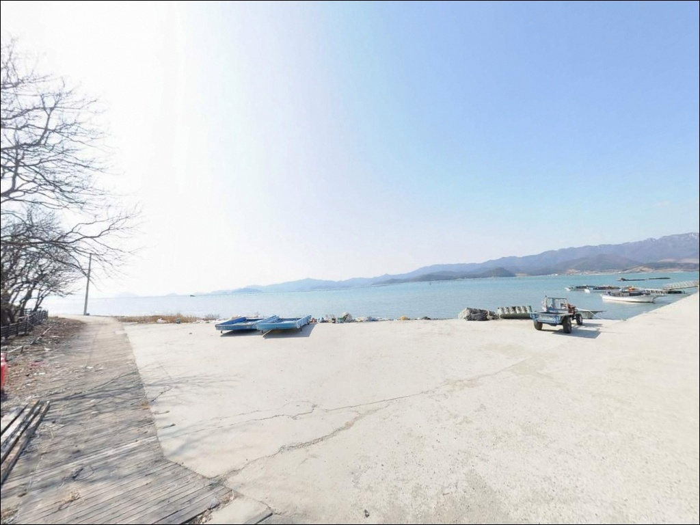
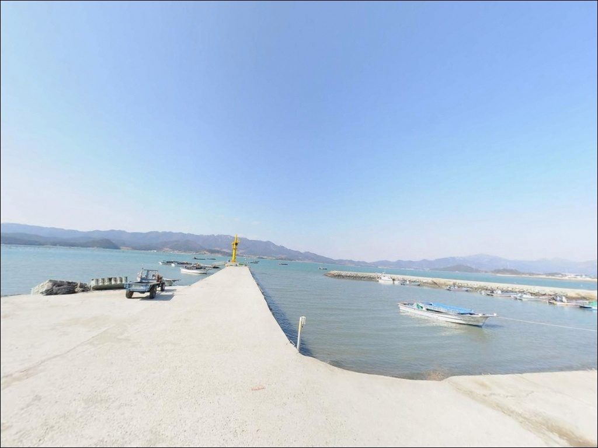
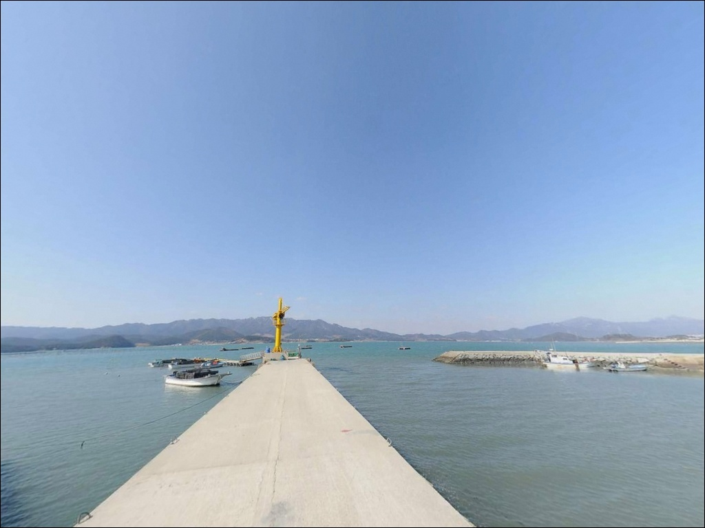
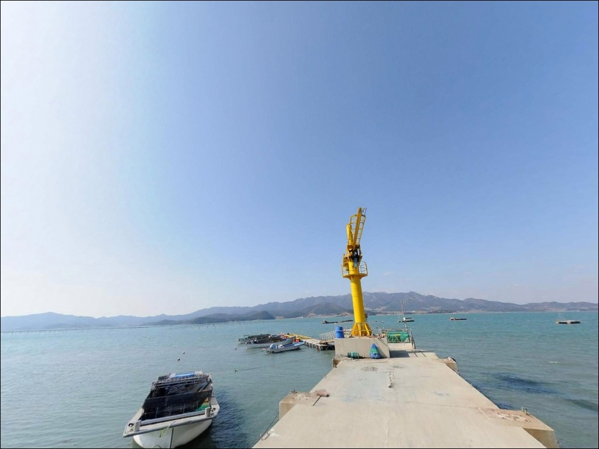
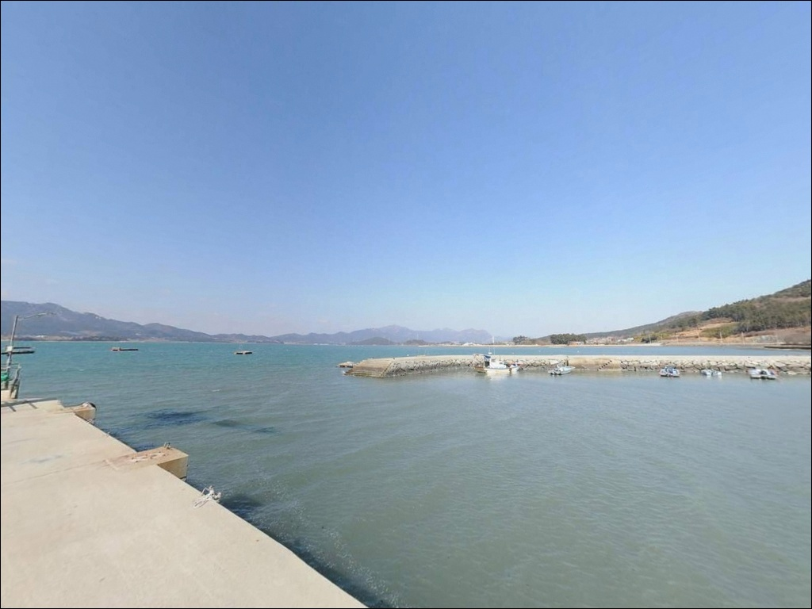
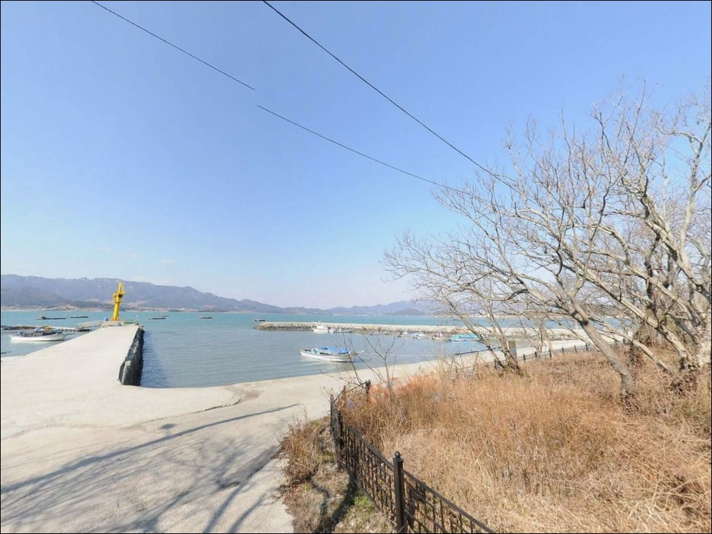

이 페이지에는 광고(제휴 링크 포함)가 있으며, 광고 링크를 통해 구매하면 운영자가 판매 수익 또는 수수료를 받을 수 있습니다. 포인트 사진: 카카오맵 스카이뷰·로드뷰. 이 페이지의 지도·사진 이미지는 카카오맵의 실제 서비스 이미지와 다를 수 있습니다.


갈문리방파제, 대문리선착장, 전남 완도군 차박지 정보 공유 사이트 추천 바다 차박 낚시 포인트
포인트 안내
갈문리방파제(대문리선착장)
전남 완도군 군외면 대문리 193-4
갯벌이 발달한 내만 선착장은
간조 전후로 수면이 크게 낮아져
낚시 여건 자체가 사라지는 구조입니다.
중들물 이후부터 수심이 확보되기 때문에,
물때 확인 없이 도착 시각만 잡고 가면
빈 갯벌 앞에 서게 되는 경우가 생깁니다.
이 글은 대문리선착장의 물때별 낚시 여건,
진입 동선, 차박 조건을 중심으로 정리합니다.
갈문리방파제(대문리선착장)
전남 완도군 군외면 대문리 193-4
완도 본섬 북서쪽, 군외면 해안에 자리한
이 선착장은 완도수목원과 같은 행정리에 있으며,
해남군 방면 내해를 마주하는
조용한 소규모 포구형 구조입니다.
주변 어촌 커뮤니티에서도 잘 노출되지 않는
아직 덜 알려진 낚시 포인트에 속합니다.
이 글은 대문리선착장의
진입 환경, 물때 기반 낚시 여건,
차박 체류 조건에 집중합니다.
조황 단정이나 특정 어종 보장은
이 글의 범위에 포함되지 않습니다.

1. 진입 동선과 포인트 접근성
대문리는 완도수목원 방면 도로와 연결되는
군외면 해안 마을입니다.
원동리 방향 해안도로에서 마을 안길을 따라
선착장 방향으로 진입하는 구조이며,
일부 구간은 도로 폭이 좁고
구불구불한 농어촌 마을길 수준입니다.
진입로가 좁은 마을 안길에서는
사전 위성지도 확인이 방문 성패를 가르는 조건입니다.
일반 승용차 기준으로는 진입이 가능한 편이나,
대형 SUV나 루프탑 캠핑카를 이용한다면
출발 전 위성지도로 선착장까지의 경로를
미리 확인하고 진입하는 것이 안전합니다.
주차는 선착장 옆 콘크리트 공터를
활용하는 방식이 일반적입니다.
소형 마을 선착장 구조상
1~2대 수용 수준이며,
어선 접안 및 어민 작업 동선을 막지 않는
자리를 먼저 확인해야 합니다.
회차 공간이 넉넉하지 않으므로
진입 전에 마을 안에서 회차 여부를
미리 파악해두는 편이 좋습니다.

2. 차박 환경과 야간 체류 여건
차박이란 차량을 숙박 공간으로 활용하며
현장에서 하룻밤 머무는 여행 방식입니다.
대문리선착장 인근은 민가와 가까운
소규모 어촌 환경으로,
야간 프라이버시는 낮은 편에 속합니다.
선착장 쪽은 가로등이 적어 어두운 편이나,
마을 쪽에서 흘러드는 불빛이 있어
완전 암흑 환경은 아닙니다.
대문리 일대는 완도 대문리 모감주나무 군락
(천연기념물 제428호)이 위치한 마을입니다.
천연기념물 지정 구역 인근에서는
지정 장소 이외의 취사와 야영은 피하는 것이
원칙이므로, 차박 장소를 잡기 전에
현장에서 구역 위치를 먼저 확인하는 것이
좋습니다.
대문리 내에는 첫마을관광타운 야영장
(전남 완도군 군외면 대문리 691-2)이
위치하고 있습니다.
전기·온수·매점 시설을 갖춘 캠핑장으로,
선착장 주변의 노지 차박이 여의치 않다면
이 야영장을 대안으로 검토할 수 있습니다.


3. 주변 편의시설 및 인프라 현황
대문리선착장 반경 3km 이내에서
이용 가능한 편의점·마트·주유소는
확인되지 않습니다.
식수, 얼음, 낚시 소품, 연료 모두
출발 전에 완전히 갖추고 진입하는 것이
현실적인 준비 방식입니다.
반경 10km 범위, 군외면 원동리 방향으로 이동하면
GS25 완도군외점과 CU 완도군외점,
GS주유소가 있습니다.
부족한 소품이나 연료가 있다면
원동리 상권을 이용하는 것이 효율적입니다.
응급 상황에 대비한 완도읍 방면 병원·약국은
거리가 상당하므로
비상약품과 수분 준비를 철저히
갖추고 출발해야 합니다.

4. 대문리선착장 방문 전 반드시 확인해야 할 물때 조건
이 포인트에서 방문 전에 가장 먼저 할 일은
물때 확인입니다.
갯벌이 발달한 내만 구조상
간조 전후로 바닥이 드러날 가능성이 높고,
바다타임에서 군외면 기준 물때를 확인해
중들물 이후 만조 전후 타이밍을 기준으로
출발 시각을 잡는 것이 기본 전략입니다.
완도 해역은 계절에 따라 조류 변화가 큰 편이며,
기상이 나쁜 날에는 파고와 풍속이
빠르게 바뀌는 경우가 있습니다.
기상청 예보를 당일 아침 한 번 더 확인하고,
슬립웨이(경사로)는 이끼가 낄 수 있어
이동 시 미끄럼 주의가 필요합니다.
갯벌 지형 특성상 채비 손실이 생길 수 있으므로
여분 채비는 넉넉하게 준비하는 것이 좋습니다.
마을 선착장은 어민의 생업 공간입니다.
어선 이동 동선과 어구에 접촉하지 않는 자리를
먼저 확인하고 앉아야 합니다.
야간에는 선착장 난간이 없는 구간이 있으므로
헤드랜턴과 구명조끼를 반드시 착용해야 합니다.

5. 지형 기반 낚시 여건 분석
대문리선착장은 완도 본섬 북서쪽,
해남군 방면 내해를 바라보는 위치에 있습니다.
내만 구조로 파도 영향은 적은 편이며,
주변에 갯벌이 넓게 형성되어 있어
조류는 완만~중간 수준으로 흐르는
전형적인 내만형 포인트입니다.
갯벌이 발달한 내만 선착장은
물때를 맞추지 않으면 낚시 여건 자체가
사라지는 구조입니다.
중들물 이후부터 선착장 주변 수심이 확보되고,
만조 전후로 낚시 여건이 가장 살아납니다.
간조 시 갯벌이 넓게 드러나는 만큼,
물때 계산이 이 포인트 공략의
가장 기본적인 판단 기준입니다.
선착장 주변에는 소형 어선 접안에 맞는
콘크리트 제방 구조가 형성되어 있으며,
방파제 끝 방향이나 수로 입구 부근은
수심 변화 구간이 생길 수 있는 위치입니다.
아직 온라인 조황 정보가 적은 포인트이므로,
출조 전에 완도 군외면 일대 조황을
먼저 검색해 보시기 바랍니다.


6. 포인트에 어울리는 낚시 스타일
이 포인트에서 가장 잘 맞는 낚시는
원투낚시입니다.
갯벌 바닥 구조에서는 도다리·붕장어를
기대해볼 수 있는 지형 조건을 갖추고 있으며,
중들물 이후 수심이 확보되는 타이밍에
선착장 외항 방향으로 채비를 멀리 보내는 방식이
이 포인트 구조에 어울립니다.
찌낚시도 이 포인트에서 운용해볼 만한 방식입니다.
내만과 외항 경계 구간은 수심 변화가 형성되는 구간으로,
만조 전후 타이밍에 찌낚시 채비를 세우면
바닥 어종 외에 중층까지 탐색이 가능합니다.
조류가 완만한 내만 특성상
조류가 살아 있는 밀물·썰물 전환 전후가
찌낚시 반응이 높아지는 시간대입니다.
완도 군외면 해안 전반에 갑오징어·문어가
분포하는 것으로 알려져 있습니다.
선착장 주변 구조물 아래나
방파제 끝 부근에서 에깅 또는 문어낚시 채비를
함께 챙겨 가볍게 탐색해보는 것도
방문 효율을 높이는 방법입니다.
농어·볼락 루어낚시도 선착장 구조물 주변을
탐색하는 방식으로 운용해볼 수 있습니다.

7. 대안 포인트와 플랜 B 동선
대문리선착장 조건이 여의치 않을 때
가장 먼저 이동할 포인트는 원동항입니다.
같은 군외면 해안선 위에 있으며,
대문리보다 규모가 크고
방파제 구조가 뚜렷해 낚시 자리 선택 폭이
넓은 편입니다.
주차 여건도 상대적으로 안정적이어서
대문리를 처음 방문한다면
원동항을 기점으로 잡고 탐색하는 동선이
효율적입니다.
군외면 해안선을 따라 신흥리선창,
갈문리방파제 등 소규모 포인트가
가까운 거리에 밀집해 있습니다.
조류 방향이나 바람 상황에 따라
같은 해안선 위에서 자리를 바꾸는 전략이
이 일대에서 통하는 운용 방식입니다.
완도읍 방면으로 이동하면
완도항 인근 방파제 포인트에
접근할 수 있습니다.
규모가 크고 인프라가 충분해
날씨가 급변하거나 연료·소품이 부족할 때
비상 이동 목적지로도 활용할 수 있습니다.

완도수목원 옆 조용한 선착장,
물때 맞추면 충분합니다
원투낚시나 가벼운 찌낚시를 즐기는
낚시인이라면 대문리선착장의 지형 조건은
잘 맞는 환경입니다.
갯벌 내만 구조에서 중들물 이상의 타이밍을
잘 맞추면 도다리·붕장어를 기대해볼 수 있고,
온라인에 정보가 적은 만큼
직접 발품을 팔아야 하는
탐험형 포인트의 성격을 갖고 있습니다.
반면 물때 계산 없이 들어가거나,
편의시설을 기대하고 방문하면
빈 갯벌이나 빈 손으로 돌아올 수 있습니다.
물때 확인, 자급 준비, 진입로 점검,
이 세 가지가 이 포인트를 제대로 쓰는
기본 조건입니다.
완도수목원과 모감주나무 군락 옆에 자리를 깔고
조용한 내만을 바라보며 하룻밤 머무는 것을
계획한다면, 첫마을관광타운 야영장을
함께 검토하면서 낚시와 차박을
병행하는 동선이 이 포인트에 가장 어울립니다.